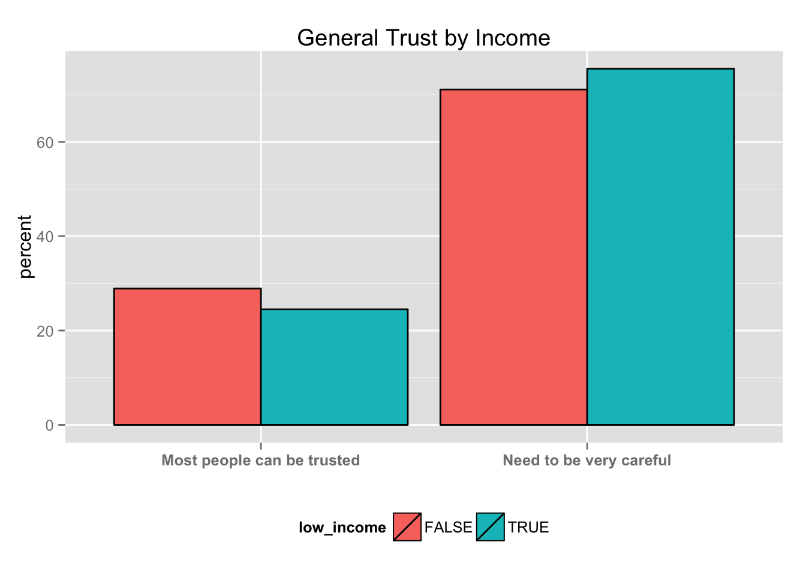
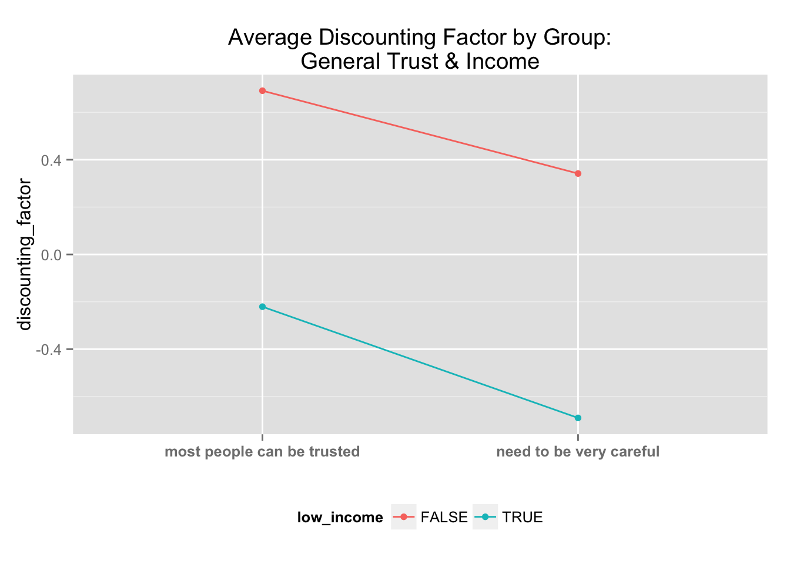
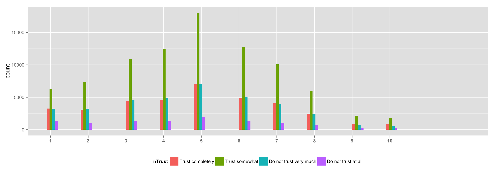

…in comparison to high-income individuals. indeed found to be the case:
hyp1 <- pca_val_dataNOINCOME %>% filter(!is.na(income)) %>%
mutate(low_income = ifelse(income <=4, T, F)) %>%
group_by(low_income) %>%
summarise(discounting_factor = mean(pc1, na.rm = T))
hyp1## Source: local data frame [2 x 2]
##
## low_income discounting_factor
## 1 FALSE 0.4402850
## 2 TRUE -0.5802993hyp1 <- pca_val_dataNOINCOME %>% filter(!is.na(income)) %>%
mutate(low_income = ifelse(income <=3, T, F)) %>%
group_by(low_income) %>%
summarise(discounting_factor = mean(pc1, na.rm = T))
hyp1## Source: local data frame [2 x 2]
##
## low_income discounting_factor
## 1 FALSE 0.3134917
## 2 TRUE -0.7559027hyp1 <- pca_val_dataNOINCOME %>% filter(!is.na(income)) %>%
mutate(low_income = ifelse(income <=2, T, F)) %>%
group_by(low_income) %>%
summarise(discounting_factor = mean(pc1, na.rm = T))
hyp1## Source: local data frame [2 x 2]
##
## low_income discounting_factor
## 1 FALSE 0.1830474
## 2 TRUE -0.9055859hyp1 <- pca_val_dataNOINCOME %>% filter(!is.na(income)) %>%
mutate(low_income = ifelse(income <=1, T, F)) %>%
group_by(low_income) %>%
summarise(discounting_factor = mean(pc1, na.rm = T))
hyp1## Source: local data frame [2 x 2]
##
## low_income discounting_factor
## 1 FALSE 0.09136873
## 2 TRUE -0.98249321indeed in every definition of low income, there are as a percent within each group, less poor people that have general trust when compared to middle/high income individuals
## Source: local data frame [4 x 3]
## Groups: gTrust
##
## gTrust low_income percent
## 1 Most people can be trusted TRUE 24.5
## 2 Most people can be trusted FALSE 28.9
## 3 Need to be very careful TRUE 75.5
## 4 Need to be very careful FALSE 71.1
## Source: local data frame [4 x 3]
## Groups: gTrust
##
## gTrust low_income percent
## 1 Most people can be trusted TRUE 23.61
## 2 Most people can be trusted FALSE 28.38
## 3 Need to be very careful TRUE 76.39
## 4 Need to be very careful FALSE 71.62## Source: local data frame [4 x 3]
## Groups: gTrust
##
## gTrust low_income percent
## 1 Most people can be trusted TRUE 21.84
## 2 Most people can be trusted FALSE 28.00
## 3 Need to be very careful TRUE 78.16
## 4 Need to be very careful FALSE 72.00## Source: local data frame [4 x 3]
## Groups: gTrust
##
## gTrust low_income percent
## 1 Most people can be trusted TRUE 20.66
## 2 Most people can be trusted FALSE 27.48
## 3 Need to be very careful TRUE 79.34
## 4 Need to be very careful FALSE 72.52indeed less general trust means more discounting
# fit1 <- glm(as.factor(gTrust) ~ pc1, data = pca_val_dataNOINCOME, family = binomial())
# summary(fit1)
pca_val_dataNOINCOME %>% group_by(gTrust) %>%
summarise(discounting_factor = mean(pc1, na.rm = T)) ## Source: local data frame [4 x 3]
## Groups: gTrust
##
## gTrust low_income discounting_factor
## 1 most people can be trusted FALSE 0.6913303
## 2 most people can be trusted TRUE -0.2206183
## 3 need to be very careful FALSE 0.3416947
## 4 need to be very careful TRUE -0.6902386
## Source: local data frame [4 x 3]
## Groups: gTrust
##
## gTrust low_income discounting_factor
## 1 most people can be trusted FALSE 0.5789164
## 2 most people can be trusted TRUE -0.3708683
## 3 need to be very careful FALSE 0.2121024
## 4 need to be very careful TRUE -0.8676475## Source: local data frame [4 x 3]
## Groups: gTrust
##
## gTrust low_income discounting_factor
## 1 most people can be trusted FALSE 0.47285919
## 2 most people can be trusted TRUE -0.53019528
## 3 need to be very careful FALSE 0.07459563
## 4 need to be very careful TRUE -1.00325036## Source: local data frame [4 x 3]
## Groups: gTrust
##
## gTrust low_income discounting_factor
## 1 most people can be trusted FALSE 0.4046767
## 2 most people can be trusted TRUE -0.5956233
## 3 need to be very careful FALSE -0.0227507
## 4 need to be very careful TRUE -1.0787110indeed there is no significant variation across neighborhood trust: 
##
## Call:
## lm(formula = pc1 ~ nTrust, data = pca_val_data)
##
## Residuals:
## Min 1Q Median 3Q Max
## -5.7347 -0.9605 0.1425 1.0979 3.9332
##
## Coefficients:
## Estimate Std. Error t value Pr(>|t|)
## (Intercept) -0.373554 0.018941 -19.72 <2e-16 ***
## nTrust 0.102602 0.004786 21.44 <2e-16 ***
## ---
## Signif. codes: 0 '***' 0.001 '**' 0.01 '*' 0.05 '.' 0.1 ' ' 1
##
## Residual standard error: 1.55 on 155853 degrees of freedom
## Multiple R-squared: 0.00294, Adjusted R-squared: 0.002934
## F-statistic: 459.6 on 1 and 155853 DF, p-value: < 2.2e-16##
## Call:
## lm(formula = pc1 ~ nTrust + gTrust, data = pca_val_data)
##
## Residuals:
## Min 1Q Median 3Q Max
## -5.7588 -0.9482 0.1398 1.0866 3.9798
##
## Coefficients:
## Estimate Std. Error t value Pr(>|t|)
## (Intercept) 0.147999 0.021122 7.007 2.45e-12 ***
## nTrust 0.060006 0.004808 12.481 < 2e-16 ***
## gTrustneed to be very careful -0.483010 0.008975 -53.817 < 2e-16 ***
## ---
## Signif. codes: 0 '***' 0.001 '**' 0.01 '*' 0.05 '.' 0.1 ' ' 1
##
## Residual standard error: 1.536 on 155852 degrees of freedom
## Multiple R-squared: 0.02113, Adjusted R-squared: 0.02112
## F-statistic: 1682 on 2 and 155852 DF, p-value: < 2.2e-16##
## Call:
## lm(formula = pc1 ~ nTrust * gTrust, data = pca_val_data)
##
## Residuals:
## Min 1Q Median 3Q Max
## -5.7746 -0.9473 0.1403 1.0874 3.9716
##
## Coefficients:
## Estimate Std. Error t value Pr(>|t|)
## (Intercept) 0.07632 0.04392 1.738 0.0822
## nTrust 0.07750 0.01055 7.343 2.09e-13
## gTrustneed to be very careful -0.39396 0.04867 -8.095 5.75e-16
## nTrust:gTrustneed to be very careful -0.02207 0.01185 -1.862 0.0626
##
## (Intercept) .
## nTrust ***
## gTrustneed to be very careful ***
## nTrust:gTrustneed to be very careful .
## ---
## Signif. codes: 0 '***' 0.001 '**' 0.01 '*' 0.05 '.' 0.1 ' ' 1
##
## Residual standard error: 1.536 on 155851 degrees of freedom
## Multiple R-squared: 0.02115, Adjusted R-squared: 0.02113
## F-statistic: 1123 on 3 and 155851 DF, p-value: < 2.2e-16| Dependent variable: | |||
| pc1 | |||
| (1) | (2) | (3) | |
| nTrust | 0.103*** | 0.060*** | 0.077*** |
| (0.005) | (0.005) | (0.011) | |
| gTrustneed to be very careful | -0.483*** | -0.394*** | |
| (0.009) | (0.049) | ||
| nTrust:gTrustneed to be very careful | -0.022* | ||
| (0.012) | |||
| Constant | -0.374*** | 0.148*** | 0.076* |
| (0.019) | (0.021) | (0.044) | |
| Observations | 155,855 | 155,855 | 155,855 |
| R2 | 0.003 | 0.021 | 0.021 |
| Adjusted R2 | 0.003 | 0.021 | 0.021 |
| Residual Std. Error | 1.550 (df = 155853) | 1.536 (df = 155852) | 1.536 (df = 155851) |
| F Statistic | 459.556*** (df = 1; 155853) | 1,682.158*** (df = 2; 155852) | 1,122.612*** (df = 3; 155851) |
| Note: | p<0.1; p<0.05; p<0.01 | ||
broken down by neighborhood trust and general trust
## Source: local data frame [10 x 3]
## Groups: nTrust
##
## nTrust gTrust discounting_factor
## 1 1 most people can be trusted -0.87534580
## 2 1 need to be very careful -1.17086818
## 3 2 most people can be trusted 0.08764684
## 4 2 need to be very careful -0.23850438
## 5 3 most people can be trusted 0.26104152
## 6 3 need to be very careful -0.13387118
## 7 4 most people can be trusted 0.43928781
## 8 4 need to be very careful -0.07718682
## 9 5 most people can be trusted 0.39925960
## 10 5 need to be very careful -0.08642850## Source: local data frame [10 x 3]
## Groups: nTrust
##
## nTrust gTrust discounting_factor
## 1 1 most people can be trusted -0.58806363
## 2 1 need to be very careful -0.99620689
## 3 2 most people can be trusted 0.07387797
## 4 2 need to be very careful -0.21912762
## 5 3 most people can be trusted 0.22369363
## 6 3 need to be very careful -0.14394197
## 7 4 most people can be trusted 0.37990871
## 8 4 need to be very careful -0.08096854
## 9 5 most people can be trusted 0.38830949
## 10 5 need to be very careful -0.05921662